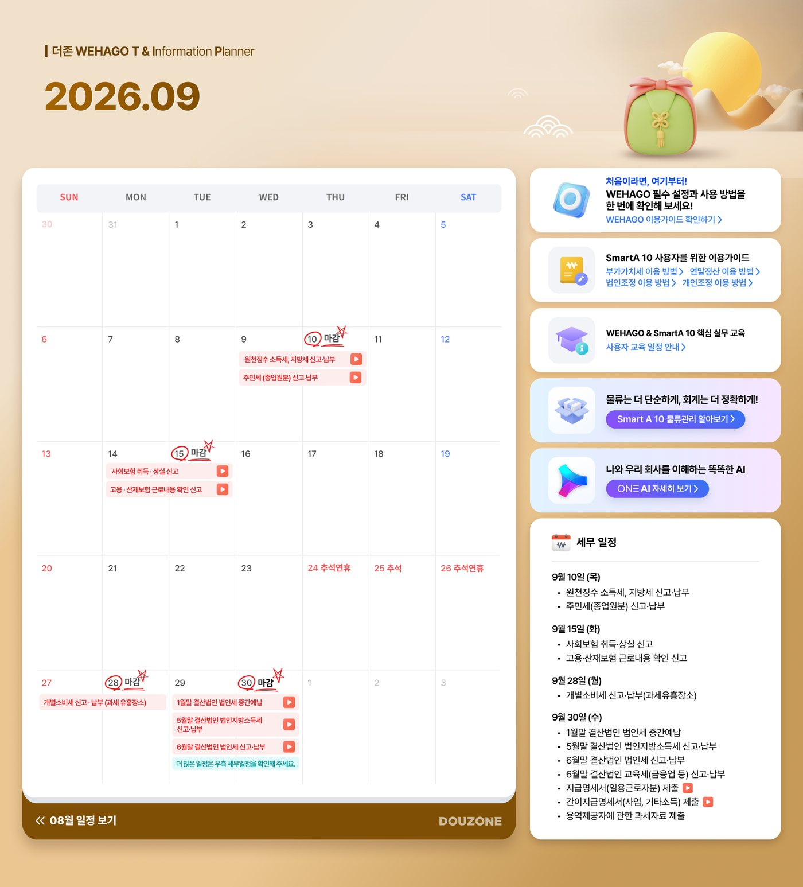
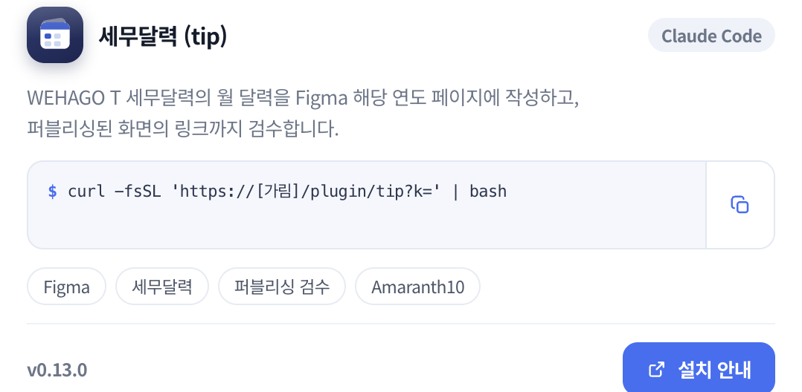
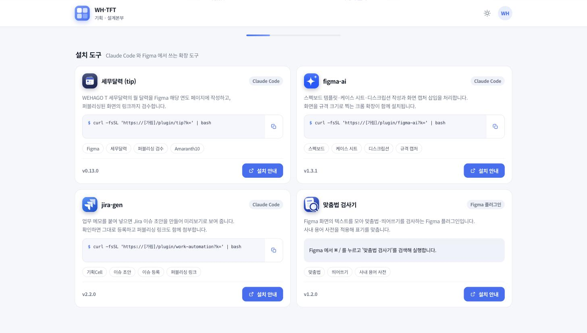

이 글에 대해
더존비즈온에서 제품 기획을 하며 매일 하던 기획 업무에 AI를 직접 붙여 본 기록입니다.
화면 기획, 스펙 작성, 배포 검수를 주로 맡으면서 AI는 문장 요약과 초안 작성에만 썼습니다. 그 AI를 매달 만들던 세무달력 업무에 그대로 넣어 보는 것부터 시작했습니다. 이후 화면 스펙 작성, 기존 화면 찾기, 시안·기획서 대조, 정책 문서 정리로 범위를 넓혔습니다. 결과물은 사내 포털 한 곳에 모아 팀원이 카드에서 바로 설치해 쓰도록 했습니다.
새 자동화 대상을 찾는 대신 이미 하던 업무에서 출발한 이유, 지난달 결과물과 원본 문서로 AI에게 일을 가르친 방법, 허술한 검수 기준과 잘못 걸리던 오류를 고친 과정을 그동안 받은 질문에 답하는 형식으로 정리했습니다. AI에게 맡길 일과 기획자가 남길 일을 나누는 기준도 함께 적었습니다.
처음 읽는 분께
이 글은 개발을 하지 않는 기획자가 매달 하던 업무에 AI를 붙여 본 이야기입니다. 코드나 명령어를 몰라도 읽을 수 있도록, 본문에 자주 나오는 말을 먼저 정리했습니다.
한 건씩 묻던 AI를 업무 흐름 안으로
어떤 일을 해 왔나요?
2024년부터 2026년까지 더존비즈온에서 제품 기획을 했어요. 화면을 기획하고 스펙을 쓰고, 배포된 결과를 확인하는 일을 주로 했습니다. 도구는 Figma, 위키, 지라, 제플린을 가장 많이 썼어요.
기획 업무를 해 보면 결과물 자체보다 그 결과물에 이르는 맥락이 훨씬 많아요. 무엇을 보고, 무엇을 기준으로 삼고, 언제 예외로 두고, 어디까지 확인해야 끝인지를 늘 같이 들고 일하거든요. 이번에 정리한 작업도 결국 이 맥락을 AI에게 어떻게 넘길지에 대한 이야기예요.
| 업무 맥락 | 기획자가 판단하는 것 | 이 글에서의 예 |
|---|---|---|
| 참고 자료 | 무엇을 보고 만드는지 | 지난달 세무달력과 이번 달 원본 일정 문서 |
| 판단 기준 | 무엇이 맞고 틀린지 | 시안 문구가 기획서 문구와 같은지 |
| 예외 | 언제 기준을 적용하지 않는지 | 줄바꿈만 다른 문구, 더미 데이터 |
| 완료 조건 | 어디까지 확인해야 끝인지 | 발송본이 검수 22개를 모두 통과하는지 |
AI는 원래 어떻게 썼나요?
꽤 자주 썼어요. 문장을 다듬고, 요약하고, 초안을 잡는 데 썼고 실제로 빨라지기도 했어요. 다만 쓰는 방식은 계속 같았습니다. 필요한 내용을 가져와서 AI에게 요청하고, 결과를 다시 업무에 붙이는 식이었죠. "간단하게 요약해서 알려줘" 같은 요청을 한 건씩 보내는 방식이었어요.
- 필요한 내용을 가져와서
- AI에게 요청하고
- 결과를 다시 업무에 붙입니다
그 방식의 한계는 무엇이었나요?
도움은 됐는데 일하는 흐름은 그대로였어요. 요청할 때마다 형식과 자료를 다시 설명해야 했고, 자료도 제가 찾아서 복사해 넘겨야 했어요. 결과가 오면 같은 항목을 매번 제가 다시 확인했고요. 한 건씩 맡기는 것만으로는 그 이상 나아가지 않는다고 느꼈어요.
지난달 결과물과 이번 달 원본으로 가르친 세무달력
AI를 업무에 넣어 보기로 하고 첫 대상으로 세무달력을 고른 이유는 무엇인가요?
AI에 맞는 일을 새로 찾지 않고, 하던 업무 하나에 그대로 넣어 보기로 했어요. 세무달력은 매달 하던 업무였고, 이전 결과물과 원본 자료가 이미 남아 있었어요. 그달 일정은 바뀌지만 만드는 순서와 확인 방식은 거의 같았고요.
만드는 순서는 원본 문서에서 그달 일정을 확인하고, Figma로 달력 화면을 만들고, 발송본에서 링크와 항목을 확인하는 세 단계였어요.
그 과정을 AI에게는 어떻게 설명했나요?
처음부터 규칙을 전부 설명하지 않았어요. 만드는 방식은 기존 세무달력에서 파악하게 하고, 이번 달에 바뀐 일정은 외부 원본 문서에서 조회하게 했어요. 두 가지를 합쳐서 기존 방식에 새 내용을 채우는 식이에요.
신입에게 지난달 만든 것부터 보고 이번 달 자료는 여기서 확인하라고 안내하는 것과 비슷했어요.
그렇게 기준이 잡힌 뒤에는 무엇이 달라졌나요?
요청 자체가 짧아졌어요. 지금은 그날 하던 대로 한 줄만 보내요. 그러면 기존 결과물에서 방식을 파악하고, 이번 달 원본에서 내용을 조회하고, 정해 둔 기준으로 결과를 만들어요. 검수까지 손으로 하면 2시간 가까이 걸리던 세무달력 한 건이 2.9분으로 줄었습니다.
- 기존 결과물에서 방식을 파악합니다
- 이번 달 원본에서 내용을 조회합니다
- 정해 둔 기준으로 결과를 생성합니다

반대로 예상과 달랐던 점도 있었나요?
만들 수 있는 것과 맡겨도 되는 것은 달랐어요. 처음에는 링크가 열리면 통과로 봤는데, 그러면 내용이 틀려도 통과됐어요. 검수 기준이 허술하면 틀린 결과도 완료된 것처럼 보이더라고요. 지금은 원본 표와 항목을 직접 대조한 뒤에 통과 여부를 정해요.

세무달력을 만들면서 얻은 가장 큰 배움은 무엇이었나요?
AI가 잘하느냐보다 어떤 조건이면 맡겨도 되느냐였어요. 기존 방식, 바뀌는 원본, 검수 기준. 이 세 가지가 있어야 실제 업무로 쓸 수 있었습니다.
다섯 업무로 넓히며 잘못 걸리는 것부터 줄이기
세무달력 다음에는 어떤 업무로 넓혔나요?
그다음 질문은 AI로 무엇을 만들지보다 하던 업무 어디에 붙일지였어요. 그래서 실제 기획 업무 여러 개로 범위를 넓혀 봤어요. 전부 원래 하던 일이고, 업무마다 AI가 맡을 부분과 사람이 판단할 부분을 나눠서 적용했어요.
화면 스펙 작성은 화면 항목을 추출해 스펙 규격에 맞춰 초안을 만드는 일까지 AI에게 맡기고, 정책과 예외 판단은 제가 했어요. 기존 화면 찾기는 링크·원문·날짜로 후보를 먼저 좁히는 것까지만 AI가 하고, 같은 화면인지는 제가 최종 판단했고요. 정책·문서 정리는 지라·위키·Figma에 흩어진 조건을 정해 둔 기준에 맞춰 모으는 것까지 AI가 하고, 무엇을 정책으로 볼지는 제가 정했어요.
그중 시안과 기획서를 대조하는 업무는 어떤 일이었나요?
디자인 시안과 기획서를 한 줄씩 맞춰 보던 검수예요. 확정된 제플린 시안을 기준으로 두고, 같은 화면의 Figma 기획서와 자동으로 대조한 뒤, 검수 리포트에서 반영·확인·표기 통일로 나눠 담당별로 보여 줘요. 화면 하나에 확인할 문구가 수백 건인데, 실제로 고쳐야 할 항목은 그중 일부였어요.
수백 건 중에서 실제로 볼 것만 남기려면 어떻게 해야 했나요?
전부 다르다고 표시하면 아무도 보지 않아요. 그래서 잘못 걸리는 것부터 줄였어요. 화면을 만드는 방식이 달라서 같은 문구가 여러 조각으로 나뉘어 잡히면 다시 하나로 묶고, 표나 목업 안의 예시 데이터나 시안에만 있는 표시는 비교 대상에서 빼는 식으로 규칙 8개를 만들었어요. 남은 항목만 디자인 반영, 기획 확인, 표기 통일로 나눴고요. 같은 화면 기준으로 확인 항목이 200건 넘던 것이 25건으로 줄었어요.
- 줄·노드 구조가 달라 갈라진 문구를 다시 붙입니다
- 표·목업 예시 데이터, 시안 전용 라벨은 제외합니다
- 남은 항목만 디자인 반영·기획 확인·표기 통일로 나눕니다
규칙으로 걸러내다 보면 필요한 항목까지 빠지지 않나요?
그래서 회차마다 왜 제외했는지 로그로 남겼어요. 조용히 잘라내지 않으려고요. 여기서 배운 것도 세무달력과 같았어요. 무엇이 다른지 찾기 전에 무엇을 잘못 걸리는 것으로 뺄지부터 정해야 했고, 남은 항목은 담당을 정해 사람이 봤습니다.
맡길 일과 남길 일을 나누고, 폴더로 남겨 팀에 건네기
여러 업무에 적용해 보면서 AI에게 맡길 일과 사람이 남길 일을 나누는 기준이 생겼나요?
업무를 볼 때 네 군데로 나눠 봐요. 이 일을 어떤 모양과 규칙으로 하는지, 매번 새로 들어오는 정보가 어디 있는지, 정해진 순서로 반복되는 단계가 무엇인지, 기준·예외·최종 결정이 필요한 지점이 어디인지요. 이렇게 나누면 AI에게 맡길 자리와 사람이 봐야 하는 자리가 함께 보여요.
그렇게 나눠 보니 실제로 어떤 일을 맡기고, 어떤 일을 남겼나요?
정해진 순서를 실행하고, 자료를 조회하고, 규칙에 따라 정리하고, 비교할 수 있는 기본 검수를 하는 일은 AI에게 맡겼어요. 무엇을 할지, 기준을 어떻게 둘지, 예외를 어떻게 판단할지, 결과가 맞는지는 제가 정했고요. AI는 기획자의 일을 대신한다기보다 사람이 판단하기 전의 반복 작업을 줄이는 쪽에 가까웠어요.
- 정해진 순서 실행
- 자료 조회
- 규칙에 따른 정리
- 비교 가능한 기본 검수
- 무엇을 할지 결정
- 기준 결정
- 예외 판단
- 결과 판단 · 최종 확인
한 번 잘 된 방식은 다음에도 쓰도록 어떻게 남겨 두었나요?
한 번 잡힌 기준과 자료 위치를 매번 다시 설명하지 않도록 폴더로 묶었어요. 대화창에만 있으면 다음에 또 설명해야 하고, 팀원이 그대로 쓰기도 어려워요. 폴더로 남겨 두면 제가 다시 쓰기도 하고 팀에도 그대로 전달할 수 있어요. 세무달력 폴더 안에는 만드는 순서와 표기 방식을 적은 업무 순서 문서, 무엇을 어떻게 확인하는지 적은 검수 절차 문서, 매번 같은 말을 새로 쓰지 않도록 정리한 자주 쓰는 요청, 스펙·원본 위치·구조를 적어 둔 참고자료 5개, 검수·배포를 대신 해 주는 실행 도구를 넣어 뒀어요.
이렇게 쓰면서 기준을 고친 기록은 모두 31건이고, 검수 항목 22개는 자동으로 확인하고 있어요.
├─ skills/month/SKILL.md # 업무 순서 · 표기 방식
├─ skills/qa/SKILL.md # 검수 절차
├─ commands/mg.md # 자주 쓰는 요청
├─ references/ # 스펙 · 원본 위치 · 구조, 문서 5개
└─ scripts/ # 검수 · 배포
폴더 안에 남긴 문서들은 실제로 어떻게 쓰이나요?
폴더 안 문서는 언제 쓰이는지에 따라 세 가지로 나뉘어요. 하나는 제가 비슷한 요청을 하면 AI가 알아서 찾아 읽는 문서예요. "이 화면 스펙 작성해줘"라고 말하면 관련 문서를 스스로 찾아 참고하는 식이에요. 다른 하나는 제가 정해 둔 이름을 직접 불러서 실행하는 문서고요. 나머지 하나는 새 배포본이 올라오는 것처럼 정해진 상황이 생기면 자동으로 실행돼요. 셋 다 기획자인 제가 직접 열어서 고칠 수 있는 평범한 문서예요.
팀원들에게는 어떻게 전달했나요?
만든 걸 하나로 묶어서 팀원이 짧은 명령 두 번만 실행하면 설치되도록 했어요. 도구 목록을 등록하고 설치하는 절차인데, 한 번 해 두면 다음부터는 새로 열 때마다 그대로 적용돼요.
이런 절차가 낯선 팀원에게는 사내 포털의 설치 카드에서 버튼 하나로 설치할 수 있게 따로 만들어 뒀어요. 거치는 경로만 다르고 결과는 같아요. 다섯 가지 결과물을 포털 한 곳에 모아 두어서, 따로 실행 방법을 안내하지 않아도 카드에서 설치하거나 바로 열 수 있어요. 전달하기 전에는 사내 주소, 계정 식별자, 캡처 속 이름과 사진을 가렸고요.


개발하지 않는 기획자가 하던 일에 AI를 붙인다는 것
이 과정을 거치며 일하는 방식은 어떻게 달라졌나요?
예전에는 요청할 때마다 형식과 자료를 다시 설명했는데, 지금은 한 번 정한 기준을 그대로 써요. 자료도 제가 찾아서 복사해 넘기지 않고, AI가 필요한 자료를 직접 찾아요. 결과를 받으면 같은 항목을 매번 확인하던 일이, 이제는 기본 확인까지 마친 결과를 보고 판단하는 일로 바뀌었어요.
| 전 | 후 | |
|---|---|---|
| 요청 방식 | 매번 형식·자료를 다시 설명 | 한 번 정한 기준을 그대로 사용 |
| 자료 확보 | 찾아서 복사해 넘김 | AI가 필요한 자료를 직접 찾음 |
| 결과 확인 | 같은 항목을 매번 확인 | 기본 확인까지 마친 결과를 판단 |
앞에 나온 숫자들은 어떻게 보면 되나요?
어떤 일이 실제로 맡겨졌는지 확인하려고 남긴 지표예요. 성과를 증명하는 근거로 보지는 않아요. 세무달력 한 건이 2시간에서 2.9분이 된 것도, 검수 항목 22개를 자동으로 확인하는 것도 그 업무를 AI가 실제로 맡고 있다는 표시로 봐 주시면 좋겠어요.
자기 업무에 AI를 붙여 보고 싶은 기획자는 어떤 순서로 시작하면 좋을까요?
완성된 자동화를 찾지 말고, 지금 하는 업무 하나에서 시작하면 좋겠어요. 저는 새 일을 찾지 않고 이미 하던 일을 넷으로 나눴어요. 기존 결과물에서 방식을 찾고, 바뀌는 자료를 연결하고, 반복 실행을 맡기고, 판단 지점을 남기는 순서예요.
개발을 하지 않아도, 평소 하던 말을 정리하는 데서 시작할 수 있었어요.
여러분이 지금 하는 일 중, AI에게 먼저 맡겨 볼 수 있는 것은 무엇인가요?
제 작업은 새로운 AI 활용처를 찾는 데서 시작하지 않았습니다. 매달 하던 세무달력, 한 줄씩 맞춰 보던 시안 검수처럼 이미 손에 익은 업무를 기존 방식, 바뀌는 자료, 반복 실행, 사람 판단으로 나눠 보는 데서 출발했습니다. 그렇게 나누자 AI에게 넘길 반복 작업과 기획자가 직접 해야 할 판단이 구분됐고, 한 번 정한 기준은 폴더와 포털로 남아 팀이 함께 쓰는 도구가 됐습니다.
후원 링크는 토스 프로필 연결 예정입니다.
더 깊이 보고 싶다면
대조 규칙 8개와 AI 판단 단계, 세무달력 검수기, 플러그인 설치와 자동 갱신, 도구 운영 점검 화면(status-board)은 실제 설정과 실측 값으로 따로 정리했습니다.
숙련자용 페이지 보기 →